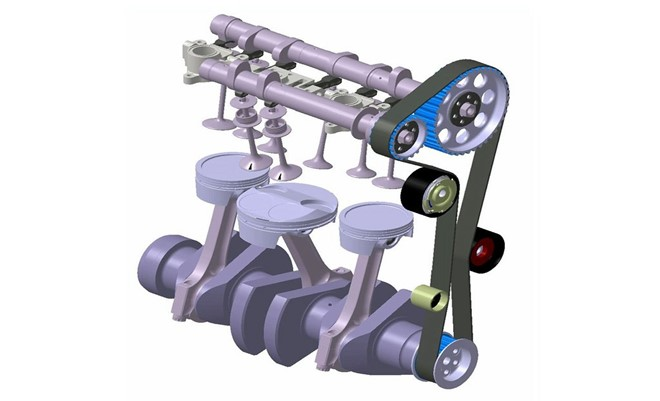
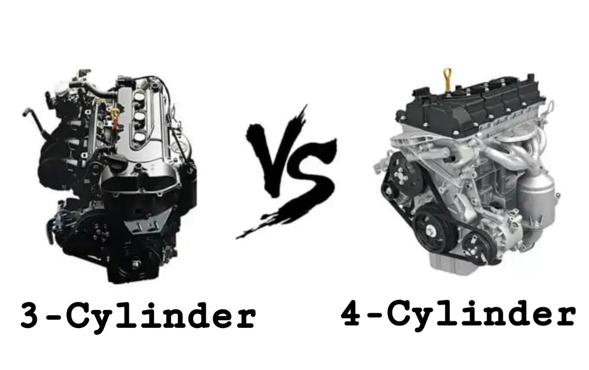
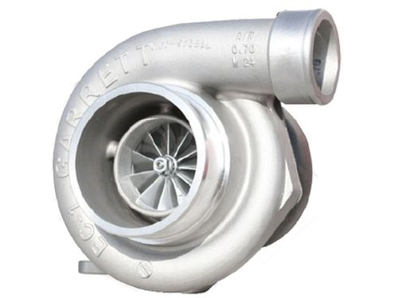

3-Cylinder Engines

When we read this term, the first thing that comes to our mind is entry-level budget cars. And it’s not wrong to be thinking that way as 3-cylinder engines were mainly used in the low budget entry-level cars like Maruti Suzuki Alto. But the present scenario is the stark opposite. With radical advancements in the field of IC Engines, we can finally produce 3-cylinder engines with power output which are comparable to a 4-cylinder one and providing much better fuel efficiency. Even BMW has produced a 3-cylinder engine called “BMW B38”. When a company which mainly concentrates on power rather than fuel efficiency opts for a 3-cylinder engine, you have to admit that it is not totally useless!
The basic structure of a 3-cylinder engine is quite similar to that of a 4-cylinder one, only it has 3 cylinders instead of one. Yes, it’s quite obvious from the name and I am not here to point out differences solely from the name!

Let’s come to the engine firing interval. The firing interval is generally decided by the formula:
720/ (No. of cylinders) °
From this expression, we can say that for a 4-cylinder engine Gfires at an interval of 180°. Thus, there will be power stroke in any one of the 4 cylinders after a 180° rotation of the shaft. However, if we use the same expression for a 3-cylinder engine, the firing interval stands at 240°.
Thus, in case of 3-cylinder engines, the power stroke takes place after the shaft rotates 240° after the last power stroke.
The firing order of the 3-cylinders are obviously different from the 4-cylinder ones. In a 4-cylinder engine the firing order is generally 1-3-4-2. Whereas for 3-cylinder engines, there is no fixed firing order and it varies from manufacturer to manufacturer.
From the above information, you might have formed a general image about the 3-cylinder engines. So, let’s just point out the advantages and limitation of a 3-cylinder engine with respect to a 4-cylinder engine.
1)
The less number of cylinders obviously imply that a 3-cylinder engine will have less power compared to a 4-cylinder engine. This limitation used to hugely affect the use of these engines in different sector other than low budget family cars. This limitation is overcome by the use of Turbochargers! Turbochargers kick in at a low rpm thanks to the modern technologies that have given a huge boost to the automobile sector.
2)
The high value of firing interval means that there is going to be a gap between two power strokes which may not be neglected at low rpms. Thus, the delivery of power is not as consistent as a 4-cylinder engine.
3)
Less number of cylinders often leads to an unsteadiness of the engine block. More the number of engines and the arrangement of the number of cylinders provide a stability to the engine block which is quite handy in reducing engine vibrations.
4)
The above two points result in more vibration of a 3-cylinder engine compared to a 4-cylinder engine.
To deal with this problem, certain companies use balancing shafts that can solve the problem of less stability. Certain tweaks to the design of the shaft can also help. In short, today’s technology has found an answer to most of limitations of a 3-cylinder engine.
With the above limitations of a 3-cylinder engine, we may vote against the use of a 3-cylinder engine. But the solutions have limited the limitations. So here let’s check out the major benefits of using a 3-cylinder engine.
1) With less number of cylinders compared to a 4-cylinder engine, the 3-cylinder provides the main benefit of having less weight. The less weight proves beneficial in increasing the fuel efficiency of the car and also helps in increasing the mileage (mileage/l) of the car.
2) The 3-cylinder engine obviously have less mechanical parts compared to the 4-cylinder ones and that proves helpful in decreasing the frictional losses.
As we can see, the benefits of a 3-cylinder engine outweighs the limitations that all occur due to its less number of engines. BUT! All the advantages of a 3-cylinder depend hugely on the way of driving. The proper driving of a car having 3-cylinder engine allows the driver to reap all the benefits to its fullest extent. A novice driver with blunt driving skills like bad transmission changing and improper braking can lead to mild vibrations in the engine which may be disturbing and can also affect the fuel efficiency of the engine.
Written By- Subhadeep Bose